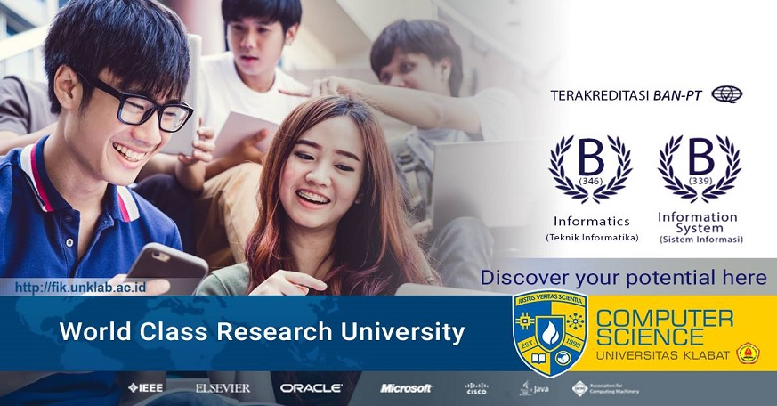
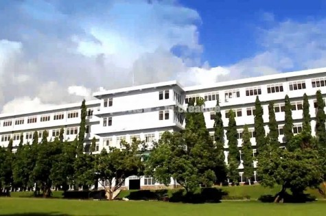
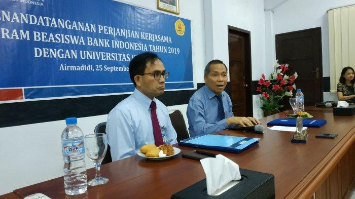
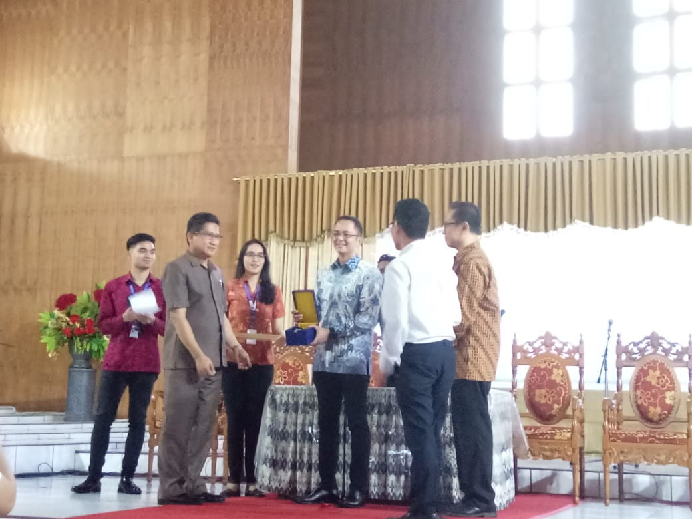
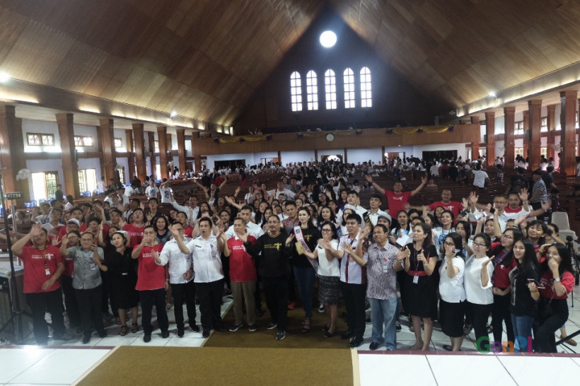

Universitas Klabat
Pathway to Excellence!
FIK UNKLAB NEWS
|
Final Test UNKLAB Universitas Klabat akan melaksanakan Read More |

New Official Website Pada hari ini website baru Fakultas Ilmu Read More |

Persiapan Peresmian Gedung Kuliah UNKLAB Hari ini, Jumat 11 Mei 2018 dilakukan Read More |
 Terima Beasiswa BI, Begini Kata Rektor 25 Sep 2019 - Rektor Universitas Klabat, Read More |
 Universitas Klabat dan Microsoft 15 Jan 2019-Kerja sama berfokus untuk Read More |
 Menpar Arief Yahya Beri Kuliah Umum 28 Mar 2019 - Kuliah yang bertema Digital Read More |
COMPUTER SCIENCE
Airmadidi,Sulawesi Utara,
Indonesia,
95371.
- Tel: +62 431 891035
- Fax: +62 431 891036
- Email: fik@unklab.ac.id
Keep Up With What's Happening


Copyright © 2014 - All Rights Reserved - Domain Name
Template by OS Templates